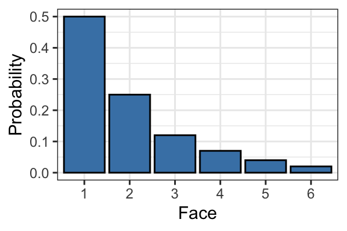
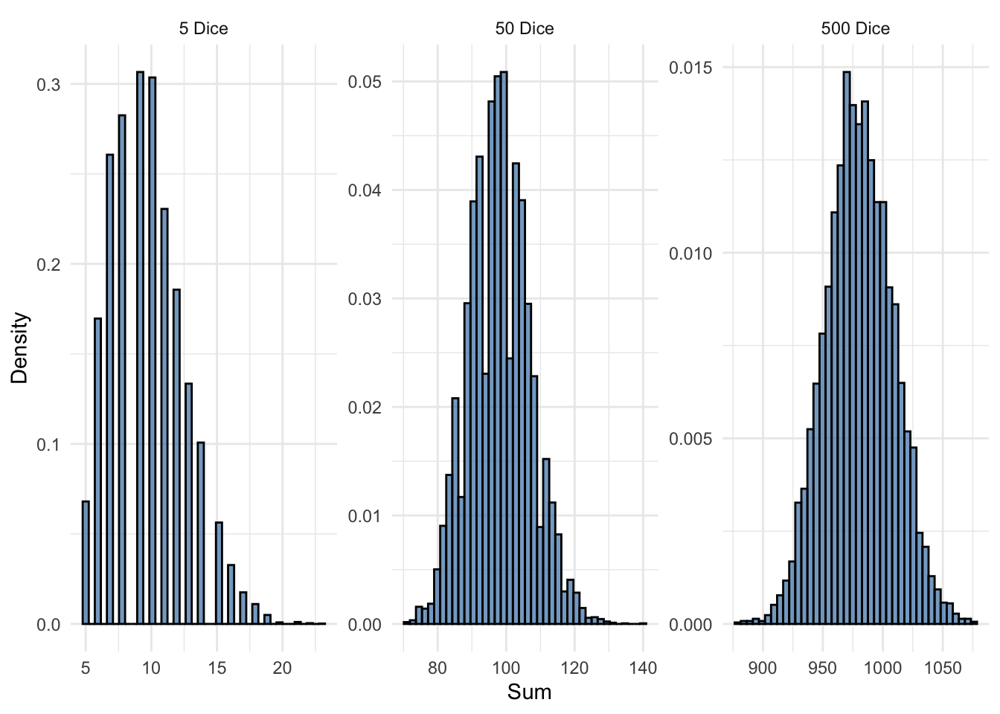
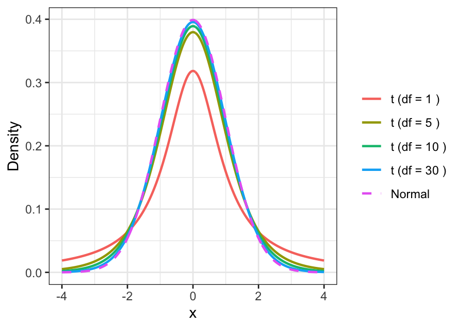
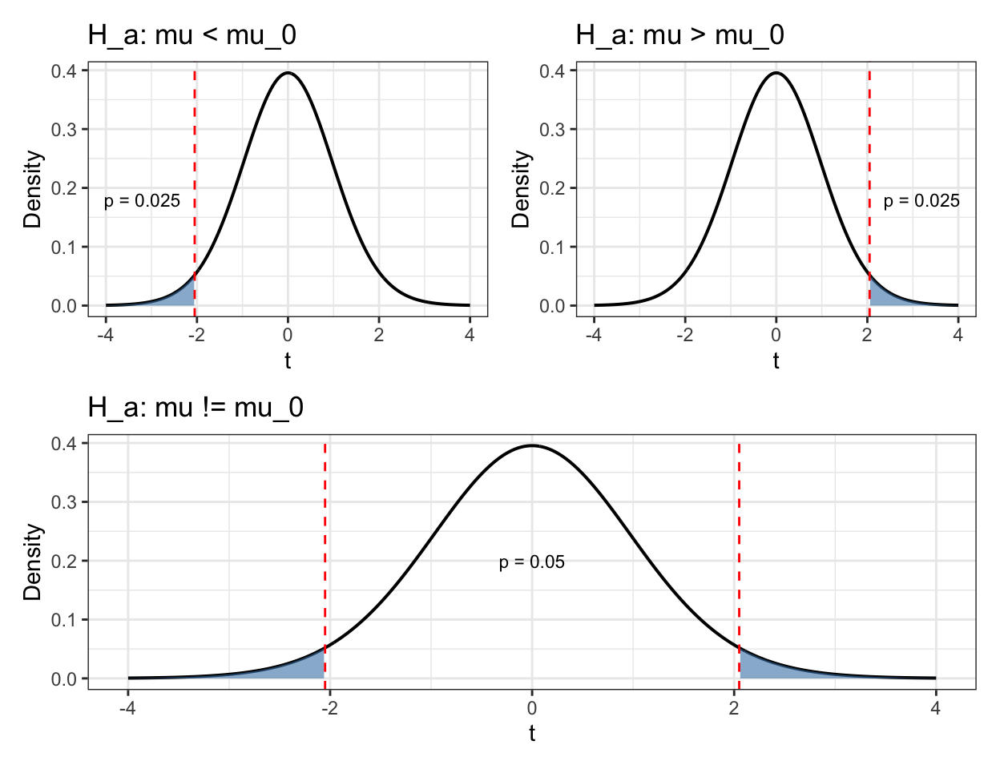
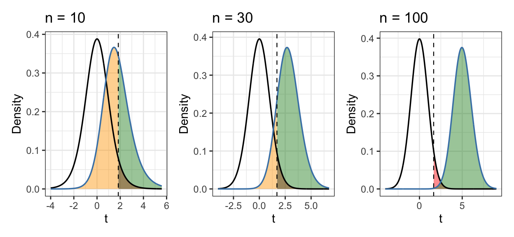
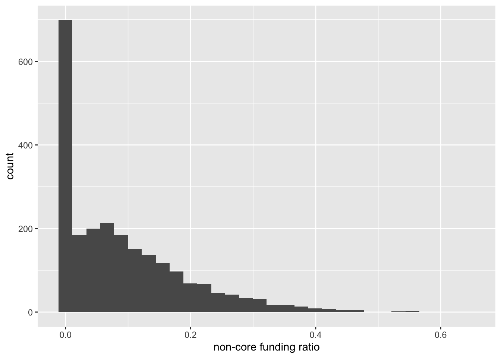

Code
[1] 500.114 [1] 485.48 505.48 506.94 524.78 499.06 472.66 550.06 500.06 424.80 444.92A majority of the data that has been collected in the history of science was collected to answer a specific question about a population of interest. Depending on the field, this broad category of question can be framed quite differently:
Each scientist or organization asking one such question wants an answer that applies to their entire population of interest, not just a subset. If the data collected corresponds to a non-representative subset of the population, the average population value of the quantity of interest might differ wildly and unpredictably from what’s implied by the sample.
Without a representative sample, any attempt to generalize from sample data to population level information is fraught. Unfortunately, there are several other conditions that our data have to meet to be useful for answering the majority of these questions. The statistical formalization of this process is known as hypothesis testing and in the following review I will provide a summary of the underlying mathematics of the one sample t-test accompanied by a small case study.
When performing a hypothesis test, we are interested in making a claim about the value of a population statistic, in our case the mean. Since we only have data from a sample of the population, we are trying to infer information about the population statistic from the sample statistic. For the t-test, we are specifically interested in the mean of the population, so going forward I’ll refer to the mean, rather than the “statistic of interesst”.
The population only has one mean, so the population mean is a fixed value. In contrast, depending on the particular sample that you’ve selected, the mean will differ across samples. The distribution of these sample means is aptly referred to as our sampling distribution, and it’s the backbone of hypothesis testing.
[1] 500.114 [1] 485.48 505.48 506.94 524.78 499.06 472.66 550.06 500.06 424.80 444.92In a nutshell, the idea of hypothesis testing is to quantify how unlikely it is to observe the sample we observed given a population distribution that differs from what we think the population distribution should be. Since we never actually get the entire sampling distribution, we have to make assumptions about the sampling distribution. At this point, we have to ask two questions of our data
We need one of these answers to be yes. If representative sample is approximately normal, we’d expect the population to be approximately normal. Our first fun math fact is that if the population distribution is normal, the distribution of sample means is also normal. Our arguably even funner fact is that so long as our sample size is big enough, the distribution of the population is irrelevant! The distribution of sample means will still be normal. This awesome property arises out of the central limit theorem. The most intuitive explanation of this concept I’ve seen is 3blue1Brown’s treatment of the subject using the sums of weighted dice.


We can see in Figure 2 that as the sample size increases, the sampling distribution is increasingly symmetric and bell shaped. This example illustrates the fact that the sum of many idependent identically distributed variables is approximately normal. The mean is such a sum divided by a constant. Dividing by a constant is a linear transformation, and any linear transformation of a normal random variable is normal. This is how the CLT is the foundation of t-testing. Now would be a reasonable time to talk about what t is.
t best understood with the more familiar notion of z-scores. A z-score is a standardized way of talking about much an observation differs from the mean under a normal distribution with mean \(\mu\) and standard deviation \(\sigma\). The direct interpretation is the number of standard deviations the observation is above or below the mean. the formula for the z-score is:
\(z = \frac{x - \mu}{\sigma}\)
As mentioned before, a linear transformation of a normal distribution is normal, and the particularly nice thing about the distribution of z is that it’s been normalized to have a mean of 0 and a standard deviation of 1. This normalization makes working with the normal distribution much easier. Anyway, here’s the formula for t:
\(t = \frac{x - \bar{\mu}}{\frac{s}{\sqrt(n)}}\)
\(\bar{\mu}\) is the sample mean, and \(s\) is the sample standard deviation. By comparing the two formulas, two immediate things jump out: (1) the population mean and standard deviation have been replaced by the sample mean and standard deviation (2) we are scaling the sample standard deviation by the size of the sample. Given that we know that the z-score follows a normal distribution, a natural guess might be that we got so lucky that t also follows a normal distribution. Unfortunately we are only that lucky at the limit, because t follows it’s own distribution, the t-distribution! The t-distribution is centered at 0 and it’s only parameter is the degrees of freedom, which we always set as \(n - 1\). Since we often want to talk about populations that we don’t expect to be centered at 0, we can shift the t distribution as needed. As n approaches infinity, the t distribution approaches the normal distribution:

Just like the z-score, the t distribution is a measure of how far our observation was from the mean of a given a distribution. Unlike the z-score, we can talk about t using only information from our sample!
Now that we have built up our mathematical tool kit, we can define the flow of our hypothesis test. We are investigating the mean value of a population, and thus our hypotheses will be about the mean. We are never trying to argue that the population mean is a certain value, we are only making claims about what it is not. Principally, we are interested in whether the population mean differs from some default value \(\mu_0\). Depending on what we’ve observed in our sample, we could claim 1 of 3 things:
What would our data have to show us for any of these to be true? The p-value is one of the last bits of mathematical machinary that we need, and now that we have the concept of a null distribution it has sufficient context to be introduced.
Here’s my favorite definition in words:
The p-value is the probability of observing a test statistic that provide as least as much support for our alternative hypothesis as what we observed, given that the null is true
Here’s how I break it down

From the plot, we now have a definition for the p-value for each alternative hypothesis
The two-tailed one is more complicated because we don’t know a priori if the true distribution is to the left or the right of the null distribution. We have to scale by some amount because of this uncertainty, and we get to just double the smallest value because the t-distribution is symmetric.
The p-value is the magic number that let’s us do what we came here for, which is to decide if we have evidence supporting an alternative hypothesis. How do we use the p-value to make a decisions? We compare it to our pre-defined false positive probability (\(\alpha\)).
A false positive is a result which provides support for the alternative hypothesis in the world where the null hypothesis is true. This positive result is false because the alternative hypothesis is not true!! Based off this definition, we should have the sense that \(\alpha\) also should correspond to an area under the null-distribution curve. Since \(\alpha\) and the p-value correspond to the same type of value, comparing them is fairly intuitive. If the p-value is less than \(\alpha\), than our result is less than \(\alpha \%\) likely to have happened by chance given the null is true. For small choice of \(\alpha\), this is a strong statement. For example if \(\alpha = .01\) and the p-value is less than \(\alpha\), there’s a $1 % $ chance that we observed our data given the null hypothesis is true! But we did observe our data! Either we got really lucky, or something’s not right in null hypothesis world. This is the type of statement we are trying to make.
For a lot of the people doing statistics in the real world, the p-value is where things often end. This isn’t good, because there are other things we care about
We answer the first question with the notion of an effect size. Effect size wasn’t emphasized as much as other concepts in the unit, and as such I give it relatively minimal treatment. Here’s one definition for effect size, cohen’s d:
\(d = \frac{\bar{x} - \mu}{s}\)
It only differs from t in that we do not scale by the sample size. There are other measures of effect size that include a bias correcting term, but I don’t understand why or how they work.
The second question is also clearly a big deal. If I’m going to bother funding an experiment in the first place, I would like to be as confident as possible that if there’s anything to find, my experiment will find it. This gives us our notion of power. Power is the complement of type 2 error, which is the probability of finding no evidence for the alternative hypothesis given that the alternative hypothesis is true (\(\beta\)). Just like p-value and \(\alpha\) live in the world where the null distribution is true, beta and power are defined as probabilities in the world where the alternative hypothesis is true. Thus, these probabilities should be calculated under some alternate distribution, rather than the null distribution. These concepts can be easily visualized

These charts show the \(\alpha\) is the complement of the true negative probability, and \(\beta\) is the complement of the true positive probability. They also show that as sample size increases, power approaches 1. This illustrates the idea of power analysis, which is a process that allows researchers to determine their sample size in advance given an effect size and power level.
These are all of the components of hypothesis testing that I think are important, so since you made it this far here’s the step-by-step:
What if rather than determining if the population statistic differed from a particular value that we somewhat arbitrarily decided in advance, we just report a range of values that are plausible given our observation? What does it mean for the value to be plausible? I’m glad you asked!
Let’s say we want to determine if a value \(\mu_1\) is a plausible value for the population statistic. We still have observed data, so the simplest thing we could do is treat \(\mu_1\) as the null-hypothesis and see if we have evidence to suggest that the true population statistic differs from \(\mu_1\) with a two-tailed t test. If we don’t, \(\mu_1\) is a plausible value for the population statistic. Great! We got one value within our desired range. One way to try filling in the rest of the range is by finding the boundaries. Here’s some definitions for the left and right boundaries with just a little formal notation:
\(l = \inf \left\{x \in \mathbb{R} : 2 * \min(P(t <= T), P(t >= T)) >= \alpha \text{, given a null distribution with mean x} \right\}\)
\(r = \sup \left\{x \in \mathbb{R} : 2 * \min(P(t <= T), P(t >= T)) >= \alpha \text{, given a null distribution with mean x} \right\}\)
\(l\) and \(r\) are thus the smallest and largest means of the null hypothesis that would lead to a failure to reject the null hypothesis under a two-sided test.
Correia, Luck, and Verner (2025) is a paper published in february of this year that aggregates an incredible amount of historical data on bank failures in the US from 1865 - 2024. They also did some really nice analysis on the predictability of these failures from bank balance sheet information. This is probably one of my favorite papers.
Anyway, one of the findings they report is that the amount of expensive, “non-core” funding increases as banks approach failure. Usually, healthy banks don’t rely on any non-core funding, so we have a nice reference value of 0. Let’s look at what the distribution of non-core funding value looks like for banks 1 year away before failing.

This one’s a little tough, the data is definitely skewed, but there’s a very high density around 0. This means that there are lots of banks that are about to fail that aren’t relying on non-core funding at all! Since our sample size is big (n = 2352), even thought the distribution is skewed, we can still apply a t-test. One real concern is the independence of observations, banks failed in clusters frequently throughout this period, and many of these failures were driven by hysteria among depositors. While we note this potential limitation, we proceed with the inference.
gen_inferences = function(data, test, null) {
results = t.test(x = data, mu = null, alternative = test)
c.i = t.test(x = data, mu = null, alternative = "two.sided")$conf.int
tibble(
"t statistic" = round(results$statistic, 3),
"p value" = round(results$p.value, 4),
"Hedges g" = round(hedges_g(x = data, mu = null)$Hedges_g, 3),
"CI lower" = round(c.i[1], 4),
"CI upper" = round(c.i[2], 4)
)
}
results = gen_inferences(data = dat$res_ratio, test = "greater", null = 0)
knitr::kable(results)| t statistic | p value | Hedges g | CI lower | CI upper |
|---|---|---|---|---|
| 44.662 | 0 | 0.921 | 0.0881 | 0.0962 |
Since in Table 1 we see that our p value is approximately 0 we have evidence to support the alternative hypothesis! We’d find the same thing if we instead looked at our confidence interval, which does not include 0.
Thanks for sticking through to the end! Since you made it this far you can have a gold star: